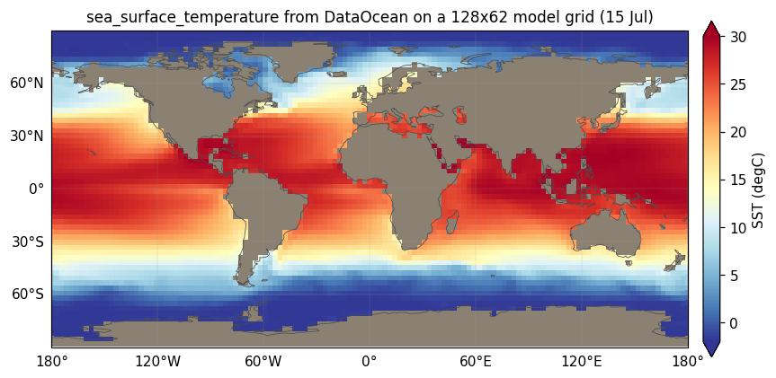

DataOcean (prescribed SSTs)
Introduction
DataOcean is a DiagnosticComponent that prescribes observed sea-surface temperatures on ocean cells, AMIP-style. Instead of letting a slab ocean evolve SST prognostically, you feed the atmosphere a time-varying SST boundary condition read from a dataset (for example a CMIP/AMIP tos file).
On every call it time-interpolates the dataset to the model time, spatially interpolates it onto the model grid, and:
- sets
sea_surface_temperatureeverywhere (a diagnostic, so sea-ice components can read it), and - overwrites
surface_temperatureonly onarea_type == "sea"cells, leaving land and ice cells untouched.
Optionally (compute_fluxes=True) it also returns bulk sensible and latent heat fluxes over the ocean.
DataOcean replaces SlabSurface for the ocean when you want a prescribed-SST (rather than interactive) lower boundary — the standard configuration for AMIP-type atmosphere-only experiments.

DataOcean on the sea cells of a 128×62 Gaussian model grid (15 July), with land greyed. The land/ocean boundary matches the area_type set by LandMask — the two components share the same geography.Loading and preparing the dataset
The constructor loads a (time, lat, lon) SST field from sst_dataset (a netCDF path or an open xarray.Dataset) under the variable named by sst_variable (default "tos"), and prepares it in three steps.
Unit detection. If the variable’s units attribute looks like Celsius — any of degC, C, celsius, degrees_c, degrees C, degrees celsius, deg_c (case- and whitespace-insensitive) — the field is converted to kelvin by adding 273.15. Otherwise it is assumed already in kelvin.
Masked-point filling. Land/masked source points (NaN) are filled per month by nearest-valid lookup using a cKDTree over the valid cells. This guarantees the source has no holes, so a coastal model cell never interpolates against a NaN.
Mid-month reconstruction (default). Monthly-mean SSTs are not instantaneous values — they are month-averages. Interpolating them linearly in time would systematically flatten seasonal extrema. DataOcean instead reconstructs mid-month boundary values whose piecewise-linear interpolation reproduces the monthly means exactly, following Taylor, Williamson & Zwiers (2000). See the next section. Set time_interpolation="linear_climatology" (any value other than "mid_month") to skip this and interpolate the raw monthly means directly.
Mid-month time interpolation
Treating each monthly mean as the average of a piecewise-linear profile through mid-month values, and placing mid-months at the centre of each equal-length month, the mean over month \(m\) relates the unknown mid-month values \(\text{mm}\) by the cyclic tridiagonal relation
\[ \overline{T}_m = \tfrac{1}{8}\,\text{mm}_{(m-1)\bmod n} + \tfrac{3}{4}\,\text{mm}_m + \tfrac{1}{8}\,\text{mm}_{(m+1)\bmod n} . \]
climt solves this cyclic system for the \(\text{mm}\) that reproduce the input monthly means. The matrix is strictly diagonally dominant (\(3/4 > 1/8 + 1/8\)) and hence non-singular — unlike the naive averaging discretisation \(\overline{T}_m = \tfrac{1}{2}(\text{mm}_m + \text{mm}_{m+1})\), whose circulant matrix is singular for \(n=12\) and cannot be solved directly.
At run time, interp_time linearly interpolates the reconstructed mid-month values to the model’s day-of-year, wrapping cyclically across the year boundary. The reconstruction assumes equal-length months while the run-time interpolation uses the true calendar day-of-year — a minor, accepted AMIP-grade inconsistency.
Spatial interpolation
The time-interpolated (lat, lon) field is mapped onto the model grid with a RegularGridInterpolator (bilinear). Model longitudes are wrapped into [0, 360) to match the source. bounds_error=False with fill_value=None allows finite linear extrapolation just beyond the source grid edges — in practice bounded, since climt’s Gaussian model grids stay within ~87° of the poles, inside the usual ±88° extent of AMIP SST grids.
The component asserts that every sea cell received a finite SST, so a misconfigured source that fails to cover the ocean fails loudly rather than silently producing NaNs.
Optional surface fluxes
With compute_fluxes=True, DataOcean also returns bulk aerodynamic sensible and latent heat fluxes over the ocean, using the shared climt._core.surface_fluxes.bulk_fluxes helper (the same single-bulk-coefficient formula used by BucketHydrology, so ocean and land flux conventions agree):
\[ H_s = \rho\, c_D\, U\, c_p\, (T_s - T_a), \qquad E = c_D\, U\, (q_s - q_a), \qquad H_l = L\, \rho\, E . \]
This adds the wind, temperature, humidity and density inputs listed below and the two flux diagnostics.
Constructor
climt.DataOcean(sst_dataset, sst_variable="tos",
time_interpolation="mid_month",
relaxation_timescale=None, compute_fluxes=False)| Argument | Default | Description |
|---|---|---|
sst_dataset |
(required) | netCDF path or xarray.Dataset with a (time, lat, lon) SST variable and lat/lon coordinates. |
sst_variable |
"tos" |
Name of the SST variable in the dataset. |
time_interpolation |
"mid_month" |
"mid_month" for TWZ reconstruction; any other value interpolates the raw monthly means directly. |
relaxation_timescale |
None |
Reserved; stored but not currently applied. |
compute_fluxes |
False |
If True, also emit bulk sensible/latent heat fluxes and require the atmospheric inputs below. |
State
Inputs (always)
| Quantity | Dims | Units |
|---|---|---|
latitude, longitude |
[*] |
degrees_north / degrees_east |
area_type |
[*] |
dimensionless |
surface_temperature |
[*] |
degK |
Additional inputs when compute_fluxes=True
| Quantity | Dims | Units |
|---|---|---|
eastward_wind, northward_wind |
[*] |
m/s |
air_temperature |
[*] |
degK |
specific_humidity, surface_specific_humidity |
[*] |
kg/kg |
air_density |
[*] |
kg/m^3 |
Diagnostics
| Quantity | Dims | Units | Notes |
|---|---|---|---|
sea_surface_temperature |
[*] |
degK |
set everywhere |
surface_temperature |
[*] |
degK |
overwritten on sea cells only |
surface_upward_sensible_heat_flux |
[*] |
W m^-2 |
compute_fluxes=True only |
surface_upward_latent_heat_flux |
[*] |
W m^-2 |
compute_fluxes=True only |
DataOcean reads state["time"] for the time interpolation, so the state must carry a model time (as it does by default).
Example
import climt
from climt import get_grid, get_default_state
ocean = climt.DataOcean("amip_sst.nc", sst_variable="tos")
mask = climt.LandMask()
state = get_default_state([ocean, mask], grid_state=get_grid(nx=128, ny=62, nz=30))
state.update(mask(state)) # set the land/sea geography first
diagnostics = ocean(state)
state.update(diagnostics) # sea cells now carry the observed SSTBundled data source
climt ships a ready-to-use 12-month climatological SST at climt/_data/data_ocean/earth_sst_climatology_1deg.nc so you can drive a prescribed-SST run out of the box:
import os, climt
sst = os.path.join(os.path.dirname(climt.__file__),
"_data", "data_ocean", "earth_sst_climatology_1deg.nc")
ocean = climt.DataOcean(sst) # variable "tos", degC auto-detectedBecause DataOcean interpolates purely by day-of-year (with a cyclic Dec→Jan wrap), a single 12-month file loops indefinitely across any model year — the model spins up a long-term climate from one climatological annual cycle.
| Dataset | NOAA OI SST V2, monthly long-term mean (climatology) |
| Base period | 1991–2020 |
| Provider | NOAA Physical Sciences Laboratory (PSL), Boulder, Colorado, USA |
| Download | https://downloads.psl.noaa.gov/Datasets/noaa.oisst.v2/sst.ltm.1991-2020.nc (product page) |
| Native grid | 1°×1° global, 12 monthly means, variable sst in °C |
| Bundled form | variable renamed sst→tos; written as netCDF-3 classic (the scipy engine used here reads classic netCDF only — the PSL source is netCDF-4/HDF5) |
| Generator | scripts/build_sst_climatology.py (re-downloads and rebuilds the file) |
Alternative products you can substitute (pass your own path to sst_dataset): HadISST (Met Office, for a longer base period) and the PCMDI AMIP-II boundary dataset (the exact SST/sea-ice forcing used by PLASIM; transient monthly rather than a single climatology).
Acknowledgement: data provided by the NOAA PSL, Boulder, Colorado, USA, from https://psl.noaa.gov.
Source
- Component:
climt/_components/data_ocean/component.py - Mid-month interpolation:
climt/_components/data_ocean/_sst_interpolation.py - Shared bulk fluxes:
climt/_core/surface_fluxes.py
Reference
Taylor, K. E., Williamson, D. & Zwiers, F. (2000). The sea surface temperature and sea-ice concentration boundary conditions for AMIP II simulations. PCMDI Report 60.